JEE Main 2023 (Session 2), 6 Apr Shift 1: worked solutions for review
Questions and options are NTA’s own images; the green option is NTA’s final key. Every solution below was written by Claude
and checked against NTA’s final key. It is not NTA’s solution. Please mark anything unclear or wrong.
Q1 · Mathematics · MCQ · ID 7155053682
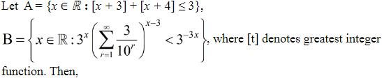
Hint 1: Simplify each set. For A, [x + 4] = [x] + 1. For B, sum the GP first.
Hint 2: A: 2[x] + 7 ≤ 3. B: Σ 3/10r = 1/3, so the left side becomes 3x × 3−(x−3) = 27.
What this tests: Greatest integer function and exponential inequalities
1. A: [x] ≤ −2, so x < −1.
2. B: 27 < 3−3x means −3x > 3, so x < −1.
3. A = B.
Answer: (1)
If this felt hard: Revise [x + n] = [x] + n and GP sums.
Claude’s answer: 1 · NTA final key: 1 · agrees · Answer recomputed with SymPy (tools/verify_pyq_solutions.py)
Q2 · Mathematics · MCQ · ID 7155053683
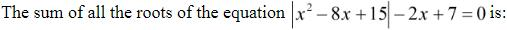
Hint 1: x2 − 8x + 15 changes sign at 3 and 5. Solve in each case and check the interval.
Hint 2: Outside [3, 5]: x2 − 10x + 22 = 0. Inside: x2 − 6x + 8 = 0.
What this tests: Equations with modulus
1. Outside: x = 5 ± √3; only 5 + √3 lies outside [3, 5].
2. Inside: x = 2 or 4; only 4 lies in [3, 5].
3. Sum = 9 + √3.
Answer: (2)
If this felt hard: Always check each root against its case. Revise Quadratic Equations.
Claude’s answer: 2 · NTA final key: 2 · agrees · Answer recomputed with SymPy (tools/verify_pyq_solutions.py)
Q3 · Mathematics · MCQ · ID 7155053684
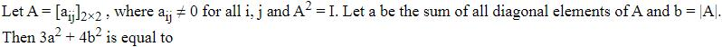
(1) 
(2) 
(4) 
Hint 1: If A2 = I but A ≠ ±I (entries non-zero), what does Cayley–Hamilton say about trace and determinant?
Hint 2: A2 − (tr A)A + (det A)I = 0 compared with A2 = I.
What this tests: Involutory matrices
1. (tr A)A = (1 + det A)I. A is not a multiple of I, so tr A = 0 and det A = −1.
2. a = 0, b = |−1| = 1.
3. 3a2 + 4b2 = 4.
Answer: (2)
If this felt hard: Revise Cayley–Hamilton for 2 × 2 matrices.
Claude’s answer: 2 · NTA final key: 2 · agrees · Answer recomputed with SymPy (tools/verify_pyq_solutions.py)
Q4 · Mathematics · MCQ · ID 7155053685
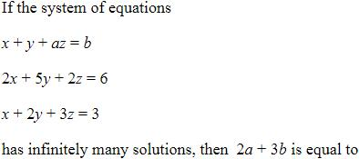
(1)
(3) 
Hint 1: Set the coefficient determinant to 0 to find a.
Hint 2: Then row 1 must be a combination p(row 2) + q(row 3).
What this tests: Linear systems
1. det = 7 − a = 0, so a = 7.
2. (1, 1, 7) = −1(2, 5, 2) + 3(1, 2, 3).
3. b = −6 + 9 = 3.
4. 2a + 3b = 23.
Answer: (2)
If this felt hard: Revise Determinants.
Claude’s answer: 2 · NTA final key: 2 · agrees · Answer recomputed with SymPy (tools/verify_pyq_solutions.py)
Q5 · Mathematics · MCQ · ID 7155053686
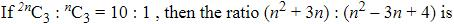
(3) 
Hint 1: Write both binomial coefficients out and cancel.
Hint 2: C(2n,3)/C(n,3) = 4(2n − 1)/(n − 2).
What this tests: Binomial coefficients
1. 4(2n − 1) = 10(n − 2), so n = 8.
2. (64 + 24) : (64 − 24 + 4) = 88 : 44 = 2 : 1.
Answer: (3)
If this felt hard: Revise Permutations and Combinations.
Claude’s answer: 3 · NTA final key: 3 · agrees · Answer recomputed with SymPy (tools/verify_pyq_solutions.py)
Q6 · Mathematics · MCQ · ID 7155053687
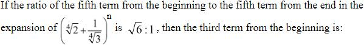
Hint 1: The fifth term from the end is the fifth term of the reversed expansion.
Hint 2: Ratio = (21/4 × 31/4)n−8 = 6(n−8)/4.
What this tests: Binomial theorem
1. 6(n−8)/4 = 61/2, so n = 10.
2. T3 = C(10,2)(21/4)8(3−1/4)2 = 45 × 4/√3 = 60√3.
Answer: (2)
If this felt hard: Revise the general term.
Claude’s answer: 2 · NTA final key: 2 · agrees · Answer recomputed with SymPy (tools/verify_pyq_solutions.py)
Q7 · Mathematics · MCQ · ID 7155053688
Hint 1: Look at the differences 6, 8, 10, 12: the nth term is quadratic.
Hint 2: Tn = n2 + 3n + 1.
What this tests: Series with quadratic terms
1. Σ n2 = 2870, Σ 3n = 630, Σ 1 = 20 for n = 1..20.
2. Sum = 3520.
Answer: (4)
If this felt hard: Revise Sequences and Series.
Claude’s answer: 4 · NTA final key: 4 · agrees · Answer recomputed with SymPy (tools/verify_pyq_solutions.py)
Q8 · Mathematics · MCQ · ID 7155053689
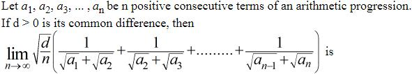
(1) 
(2)
Hint 1: Rationalise each term.
Hint 2: 1/(√ak + √ak+1) = (√ak+1 − √ak)/d.
What this tests: Telescoping sums and limits
1. Sum = (√an − √a1)/d.
2. √(d/n) × √(a1 + (n − 1)d)/d → √(d/n) × √(nd)/d = 1.
Answer: (1)
If this felt hard: Revise Limits and AP.
Claude’s answer: 1 · NTA final key: 1 · agrees · Answer recomputed with SymPy (tools/verify_pyq_solutions.py)
Q9 · Mathematics · MCQ · ID 7155053690
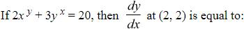
Hint 1: Differentiate both terms implicitly; both x and y appear in exponents.
Hint 2: d(xy) = xy(y' ln x + y/x); d(yx) = yx(ln y + xy'/y).
What this tests: Implicit and logarithmic differentiation
1. At (2, 2): 8(y' ln 2 + 1) + 12(ln 2 + y') = 0.
2. y' = −(8 + 12 ln 2)/(12 + 8 ln 2) = −(2 + ln 8)/(3 + ln 4).
Answer: (4)
If this felt hard: Revise Continuity and Differentiability.
Claude’s answer: 4 · NTA final key: 4 · agrees · Answer recomputed with SymPy (tools/verify_pyq_solutions.py)
Q10 · Mathematics · MCQ · ID 7155053691
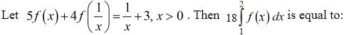
Hint 1: Replace x by 1/x to get a second equation, then solve for f(x).
Hint 2: 5f(1/x) + 4f(x) = x + 3.
What this tests: Functional equations and integrals
1. 9f(x) = 5/x − 4x + 3.
2. ∫12 f = (5 ln 2 − 6 + 3)/9.
3. 18 × that = 10 ln 2 − 6.
Answer: (3)
If this felt hard: Revise Integrals.
Claude’s answer: 3 · NTA final key: 3 · agrees · Answer recomputed with SymPy (tools/verify_pyq_solutions.py)
Q11 · Mathematics · MCQ · ID 7155053692
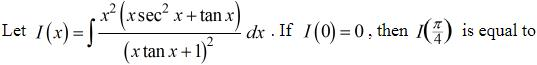
Hint 1: Notice (x tan x + 1)' = tan x + x sec2x. Integrate by parts taking x2 with it.
Hint 2: I = −x2/(x tan x + 1) + ∫ 2x cos x/(x sin x + cos x) dx.
What this tests: Integration by parts
1. ∫ 2x cos x/(x sin x + cos x) dx = 2 ln(x sin x + cos x).
2. I(0) = 0 gives C = 0.
3. I(π/4) = −π2/(4(π + 4)) + 2 ln((π + 4)/(4√2)) = ln((π + 4)2/32) − π2/(4(π + 4)).
Answer: (1)
If this felt hard: Revise Integrals.
Claude’s answer: 1 · NTA final key: 1 · agrees · Answer recomputed with SymPy (tools/verify_pyq_solutions.py)
Q12 · Mathematics · MCQ · ID 7155053693
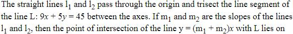
(4)
Hint 1: Find the trisection points of the segment between (5, 0) and (0, 9).
Hint 2: Points (10/3, 3) and (5/3, 6).
What this tests: Section formula
1. m1 + m2 = 9/10 + 18/5 = 9/2.
2. y = 9x/2 meets 9x + 5y = 45 at (10/7, 45/7).
3. y − x = 5.
Answer: (3)
If this felt hard: Revise Straight Lines.
Claude’s answer: 3 · NTA final key: 3 · agrees · Answer recomputed with SymPy (tools/verify_pyq_solutions.py)
Q13 · Mathematics · MCQ · ID 7155053694
(1) 
(2)
(3) 
(4) 
Hint 1: Plane through the line of intersection: P1 + λP2 = 0.
Hint 2: Its normal must be perpendicular to (−2, 4, 5).
What this tests: Family of planes
1. Normal (2 + 4λ, −1 − 3λ, 1 + 5λ)·(−2, 4, 5) = −3 + 5λ = 0, λ = 3/5.
2. Plane: 11x − 7y + 10z + 6 = 0.
3. a + b + c = 14.
Answer: (3)
If this felt hard: Revise Three Dimensional Geometry.
Claude’s answer: 3 · NTA final key: 3 · agrees · Answer recomputed with SymPy (tools/verify_pyq_solutions.py)
Q14 · Mathematics · MCQ · ID 7155053695
(1)
(2)
(3)
(4)
Hint 1: Take the edge through (3, 0, 0) parallel to z.
Hint 2: SD = |(a2 − a1)·(d1 × d2)|/|d1 × d2| with d1 = (3, 4, 5), d2 = (0, 0, 1).
What this tests: Shortest distance between skew lines
1. d1 × d2 = (4, −3, 0), magnitude 5.
2. (3, 0, 0)·(4, −3, 0) = 12.
3. SD = 12/5.
Answer: (1)
If this felt hard: Revise Three Dimensional Geometry.
Claude’s answer: 1 · NTA final key: 1 · agrees · Answer recomputed with SymPy (tools/verify_pyq_solutions.py)
Q15 · Mathematics · MCQ · ID 7155053696
(1) 
(2) 
(3) 
(4)
Hint 1: Coplanar: the scalar triple product of AB, AC, AD is 0.
Hint 2: AB = (−4, −3, 3 − 2λ), AC = (−7, λ − 5, 4 − 2λ), AD = (−6, 0, 6 − 2λ).
What this tests: Coplanarity
1. det = −4λ2 + 20λ − 24 = 0, so λ = 2 or 3.
2. Σ(λ + 2)2 = 16 + 25 = 41.
Answer: (3)
If this felt hard: Revise Vector Algebra.
Claude’s answer: 3 · NTA final key: 3 · agrees · Answer recomputed with SymPy (tools/verify_pyq_solutions.py)
Q16 · Mathematics · MCQ · ID 7155053697
(1)
(2)
(3)
(4)
Hint 1: d is parallel to b × c.
Hint 2: b × c = (2, −1, 2).
What this tests: Vector products
1. d = t(2, −1, 2); a·d = 9t = 18, so d = (4, −2, 4).
2. |a × d|2 = |a|2|d|2 − (a·d)2 = 29 × 36 − 324 = 720.
Answer: (3)
If this felt hard: Revise Lagrange's identity.
Claude’s answer: 3 · NTA final key: 3 · agrees · Answer recomputed with SymPy (tools/verify_pyq_solutions.py)
Q17 · Mathematics · MCQ · ID 7155053698
(1) 
(2)
(3) 
(4) 
Hint 1: Recover Σx2 for each set from mean and variance.
Hint 2: Σx2 = n(σ2 + mean2).
What this tests: Combined variance
1. Set 1: 15(14 + 144) = 2370. Set 2: 15(σ2 + 196).
2. Combined mean 13: (2370 + 2940 + 15σ2)/30 − 169 = 13.
3. σ2 = 10.
Answer: (3)
If this felt hard: Revise Statistics.
Claude’s answer: 3 · NTA final key: 3 · agrees · Answer recomputed with SymPy (tools/verify_pyq_solutions.py)
Q18 · Mathematics · MCQ · ID 7155053699
(1)
(2)
(3)
(4)
Hint 1: P(total 5 with two dice) = 4/36.
Hint 2: Binomial with n = 5, p = 1/9: P(4) + P(5).
What this tests: Binomial distribution
1. 5(1/9)4(8/9) + (1/9)5 = 41/95 = 41/310.
2. = 123/311, k = 123.
Answer: (3)
If this felt hard: Revise Probability.
Claude’s answer: 3 · NTA final key: 3 · agrees · Answer recomputed by script (tools/verify_pyq_solutions.py)
Q19 · Mathematics · MCQ · ID 7155053700
(1)
(2)
(3)
(4)
Hint 1: Find BQ from the 60° angle, then the height of the tower from the 15° angle.
Hint 2: BQ = 30/tan 60° = 10√3; A is BQ tan 15° above P.
What this tests: Heights and distances
1. A is 10√3(2 − √3) = 20√3 − 30 above P, so PQ = 60 − 20√3.
2. BCPQ is a rectangle: area = 10√3(60 − 20√3) = 600(√3 − 1).
Answer: (2)
If this felt hard: Revise tan 15° = 2 − √3.
Claude’s answer: 2 · NTA final key: 2 · agrees · Answer recomputed with SymPy (tools/verify_pyq_solutions.py)
Q20 · Mathematics · MCQ · ID 7155053701
(1)
(2)
(3)
(4)
Hint 1: Write p ⇒ q as ¬p ∨ q.
Hint 2: (¬P ∨ Q) ∧ (¬R ∨ Q) = (¬P ∧ ¬R) ∨ Q.
What this tests: Logical equivalence
1. = ¬(P ∨ R) ∨ Q = (P ∨ R) ⇒ Q.
Answer: (4)
If this felt hard: Revise Mathematical Reasoning.
Claude’s answer: 4 · NTA final key: 4 · agrees · Answer recomputed by script (tools/verify_pyq_solutions.py)
Note: Mathematical reasoning is no longer in the JEE syllabus.
Q21 · Mathematics · Numerical · ID 7155053702
Hint 1: Let t = a − b and test small integers.
Hint 2: 2t2 + 3t is in {0,...,4} only for t = 0 or t = −2.
What this tests: Relations
1. t = 0: 10 pairs.
2. t = −2 (b = a + 2): 8 pairs.
3. Total 18.
Answer: 18
If this felt hard: Revise Relations and Functions.
Claude’s answer: 18 · NTA final key: 18 · agrees · Answer recomputed by script (tools/verify_pyq_solutions.py)
Q22 · Mathematics · Numerical · ID 7155053703
Hint 1: Put x = p, y = p + 1 into both inequalities.
Hint 2: p + 1 ≥ 3 − p and (p + 1)2 ≤ 9 − p2.
What this tests: Regions and inequalities
1. p ≥ 1 and p2 + p − 4 ≤ 0.
2. a = 1, b = (√17 − 1)/2, so b2 + b = 4.
3. b2 + b − a2 = 3.
Answer: 3
If this felt hard: Revise Straight Lines and Circles.
Claude’s answer: 3 · NTA final key: 3 · agrees · Answer recomputed with SymPy (tools/verify_pyq_solutions.py)
Q23 · Mathematics · Numerical · ID 7155053704
Hint 1: Count all ways, then subtract those leaving a child empty.
Hint 2: Inclusion–exclusion: 320 − 3×220 + 3.
What this tests: Onto functions
1. 3486784401 − 3145728 + 3 = 3483638676.
Answer: 3483638676
If this felt hard: Revise Permutations and Combinations.
Claude’s answer: 3483638676 · NTA final key: 3483638676 · agrees · Answer recomputed by script (tools/verify_pyq_solutions.py)
Q24 · Mathematics · Numerical · ID 7155053705
Hint 1: General term power of x: 4(15 − r) − 3r.
Hint 2: 60 − 7r = 18 gives r = 6.
What this tests: Binomial theorem
1. Coefficient = C(15,6)(−1)6 = 5005.
Answer: 5005
If this felt hard: Revise the general term.
Claude’s answer: 5005 · NTA final key: 5005 · agrees · Answer recomputed with SymPy (tools/verify_pyq_solutions.py)
Q25 · Mathematics · Numerical · ID 7155053706
Hint 1: [a + 13 sin x] jumps whenever 13 sin x crosses an integer.
Hint 2: On (0, π), 13 sin x takes each value 1..12 twice and reaches 13 once at π/2.
What this tests: Differentiability of greatest-integer functions
1. 12 × 2 = 24 points, plus x = π/2 (value 13 only there, so f jumps).
2. Total 25.
Answer: 25
If this felt hard: Revise Continuity and Differentiability.
Claude’s answer: 25 · NTA final key: 25 · agrees · Answer recomputed by script (tools/verify_pyq_solutions.py)
Q26 · Mathematics · Numerical · ID 7155053707
Hint 1: Sketch: outside the circle x2 + (y − 1)2 = 1, inside the parabola x2 = 2y, below y = x.
Hint 2: The line y = x meets the parabola at (2, 2) and the circle at (1, 1).
What this tests: Area between curves
1. Area = ∫02(x − x2/2) dx − (area of the circle below y = x and above the parabola).
2. This works out to 7/6 − π/4 = (n + 2)/(n + 1) − π/(n − 1) with n = 5.
Answer: 5
If this felt hard: Revise Application of Integrals.
Claude’s answer: 5 · NTA final key: 5 · agrees · Answer recomputed with SymPy (tools/verify_pyq_solutions.py)
Note: Checked numerically in the check script.
Q27 · Mathematics · Numerical · ID 7155053708
Hint 1: The circle touches both axes: centre (r, r), A = (r, 0), B = (0, r).
Hint 2: PQ = (α + β − r)/√2 and (α − r)2 + (β − r)2 = r2.
What this tests: Circles touching the axes
1. With s = α + β: (s − r)2 = 2αβ.
2. s − r = 11√2, so 2αβ = 242.
3. αβ = 121.
Answer: 121
If this felt hard: Revise Circles.
Claude’s answer: 121 · NTA final key: 121 · agrees · Answer recomputed with SymPy (tools/verify_pyq_solutions.py)
Q28 · Mathematics · Numerical · ID 7155053709
Hint 1: Differentiate the curve at P for the tangent slope.
Hint 2: Slope at (1, 3): (2x + 2)/4 = 1.
What this tests: Tangents and lines
1. Tangent y = x + 2: A = (0, 2).
2. Line through P with slope 1/3 meets 2x − 3y = 8 at (16, 8), which is on y2 = 4x: B = (16, 8).
3. AB2 = 256 + 36 = 292.
Answer: 292
If this felt hard: Revise Straight Lines and Conic Sections.
Claude’s answer: 292 · NTA final key: 292 · agrees · Answer recomputed with SymPy (tools/verify_pyq_solutions.py)
Q29 · Mathematics · Numerical · ID 7155053710
Hint 1: Write it as a linear DE. IF = x sec x.
Hint 2: d(xy sec x)/dx = sec2x.
What this tests: Linear differential equations
1. xy = sin x + C cos x; y(π/3) = √3/(π/3) gives C = √3.
2. g = xy = sin x + √3 cos x satisfies g'' = −g, and g'' = xy'' + 2y'.
3. At π/6: xy'' + 2y' = −(1/2 + 3/2) = −2; modulus 2.
Answer: 2
If this felt hard: Revise Differential Equations.
Claude’s answer: 2 · NTA final key: 2 · agrees · Answer recomputed with SymPy (tools/verify_pyq_solutions.py)
Q30 · Mathematics · Numerical · ID 7155053711
Hint 1: Image formula in a plane.
Hint 2: 2 − 2 + 3 − 9 = −6, so Q = P + 2(2, −1, 1).
What this tests: Image in a plane; area
1. Q = (5, 0, 5).
2. PQ × PR = (4, −2, 2) × (5, 8, 4) = (−24, −6, 42), |.|2 = 2376.
3. Area2 = 2376/4 = 594.
Answer: 594
If this felt hard: Revise Three Dimensional Geometry.
Claude’s answer: 594 · NTA final key: 594 · agrees · Answer recomputed with SymPy (tools/verify_pyq_solutions.py)
Q31 · Physics · MCQ · ID 7155053712
(1)
(2)
(3)
(4)
Hint 1: Range d = √(2Rh).
Hint 2: d ∝ √h.
What this tests: TV tower range
1. √1.21 = 1.1: range increases by 10%.
Answer: (2)
If this felt hard: Revise Communication Systems.
Claude’s answer: 2 · NTA final key: 2 · agrees · Answer recomputed by script (tools/verify_pyq_solutions.py)
Note: Communication systems is no longer in the JEE syllabus.
Q32 · Physics · MCQ · ID 7155053713
(1) 
(2)
(3)
(4)
Hint 1: When a switch is closed it shorts the LED. When does the LED have a voltage across it?
Hint 2: LED glows only when both switches are open.
What this tests: Logic gates from switches
1. A or B closed → LED shorted, Y = 0.
2. Both open → Y = 1.
3. Y = (A + B)̄: NOR.
Answer: (2)
If this felt hard: Revise Semiconductor Electronics.
Claude’s answer: 2 · NTA final key: 2 · agrees · Theory question: not computable, needs a teacher’s review
Note: Figure reading: switches A and B connect the top rail to the lower node in parallel with the LED.
Q33 · Physics · MCQ · ID 7155053714
(1)
(2)
(3)
(4)
Hint 1: At constant velocity, net force is zero.
Hint 2: Weight = buoyancy + viscous force; buoyancy = Mgρ0/ρ.
What this tests: Terminal velocity
1. F = Mg(1 − ρ0/ρ).
Answer: (1)
If this felt hard: Revise Mechanical Properties of Fluids.
Claude’s answer: 1 · NTA final key: 1 · agrees · Theory question: not computable, needs a teacher’s review
Q34 · Physics · MCQ · ID 7155053715
(1)
(2)
(3)
(4)
Hint 1: Shortest wavelength = largest energy gap.
Hint 2: Compare the drops: 4→3, 4→2, 3→2, and D down to n = 1.
What this tests: Hydrogen spectrum
1. D ends at n = 1: the largest drop.
Answer: (4)
If this felt hard: Revise Atoms.
Claude’s answer: 4 · NTA final key: 4 · agrees · Theory question: not computable, needs a teacher’s review
Note: Figure reading: D ends on n = 1.
Q35 · Physics · MCQ · ID 7155053716
(1)
(2)
(3)
(4)
Hint 1: λ = h/√(2mK).
Hint 2: Compare mK: electron me(4K), α 4mp(2K), proton mpK.
What this tests: de Broglie wavelength
1. mK largest for α, then proton, smallest for electron.
2. λα < λp < λe.
Answer: (2)
If this felt hard: Revise Dual Nature.
Claude’s answer: 2 · NTA final key: 2 · agrees · Answer recomputed by script (tools/verify_pyq_solutions.py)
Q36 · Physics · MCQ · ID 7155053717
(1)
(2)
(3)
(4)
Hint 1: Snell's law gives n; frequency never changes on refraction.
Hint 2: n = sin 45°/sin 30° = √2.
What this tests: Refraction
1. λ2 = λ1/√2, ν2 = ν1.
Answer: (2)
If this felt hard: Revise Ray Optics.
Claude’s answer: 2 · NTA final key: 2 · agrees · Answer recomputed by script (tools/verify_pyq_solutions.py)
Q37 · Physics · MCQ · ID 7155053718
(1) 
(2) 
(3) 
(4)
Hint 1: Topic: Energy in EM waves. Which rule or fact from it settles this question?
Hint 2: Compare (1/2)ε0E2 and B2/(2μ0) with E = cB.
What this tests: Energy in EM waves
1. They are equal: ratio 1.
Answer: (1)
If this felt hard: Revise Electromagnetic Waves.
Claude’s answer: 1 · NTA final key: 1 · agrees · Theory question: not computable, needs a teacher’s review
Q38 · Physics · MCQ · ID 7155053719
(1)
(2) 
(3) 
(4)
Hint 1: Emf needs a changing flux.
Hint 2: Translation in a uniform field keeps the flux constant.
What this tests: Faraday's law
1. Rotating the coil (C) or changing its area (D) changes the flux.
Answer: (3)
If this felt hard: Revise Electromagnetic Induction.
Claude’s answer: 3 · NTA final key: 3 · agrees · Theory question: not computable, needs a teacher’s review
Q39 · Physics · MCQ · ID 7155053720
(1) 
(2) 
(3) 
(4) 
Hint 1: Average velocity = displacement/time.
Hint 2: Quarter circle: displacement R√2, time πR/(2v).
What this tests: Average velocity
1. vavg = 2√2v/π.
2. v : vavg = π : 2√2, so x = 2.
Answer: (3)
If this felt hard: Revise Motion in a Plane.
Claude’s answer: 3 · NTA final key: 3 · agrees · Answer recomputed by script (tools/verify_pyq_solutions.py)
Q40 · Physics · MCQ · ID 7155053721
(1)
(2)
(3)
(4)
Hint 1: Apply Ampère's law inside and outside the wire.
Hint 2: Inside: enclosed current ∝ r2.
What this tests: Field of a thick wire
1. Inside B ∝ r; outside B ∝ 1/r.
Answer: (3)
If this felt hard: Revise Moving Charges and Magnetism.
Claude’s answer: 3 · NTA final key: 3 · agrees · Theory question: not computable, needs a teacher’s review
Q41 · Physics · MCQ · ID 7155053722
(1)
(2)
(3)
(4)
Hint 1: Do semiconductors conduct better or worse when hot?
Hint 2: More carriers at higher T.
What this tests: Semiconductors
1. ρ falls non-linearly (exponentially) with T: graph 4.
Answer: (4)
If this felt hard: Revise Semiconductor Electronics.
Claude’s answer: 4 · NTA final key: 4 · agrees · Theory question: not computable, needs a teacher’s review
Q42 · Physics · MCQ · ID 7155053723
(1)
(2)
(3)
(4)
Hint 1: Field inside a shell is zero. What does that mean for V?
Hint 2: Inside V is constant; outside V = kQ/r.
What this tests: Potential of a shell
1. Flat inside, then 1/r fall: graph 2.
Answer: (2)
If this felt hard: Revise Electrostatic Potential.
Claude’s answer: 2 · NTA final key: 2 · agrees · Theory question: not computable, needs a teacher’s review
Q43 · Physics · MCQ · ID 7155053724
(1)
(2)
(3)
(4)
Hint 1: Both springs push/pull the same way on displacement.
Hint 2: keff = K1 + K2.
What this tests: Spring combinations
1. T = 2π√(m/(K1 + K2)).
Answer: (1)
If this felt hard: Revise Oscillations.
Claude’s answer: 1 · NTA final key: 1 · agrees · Theory question: not computable, needs a teacher’s review
Q44 · Physics · MCQ · ID 7155053725
(1)
(2)
(3)
(4)
Hint 1: First law in rates.
Hint 2: dU/dt = dQ/dt − dW/dt.
What this tests: First law
1. 1000 − 200 = 800 W.
Answer: (4)
If this felt hard: Revise Thermodynamics.
Claude’s answer: 4 · NTA final key: 4 · agrees · Answer recomputed by script (tools/verify_pyq_solutions.py)
Q45 · Physics · MCQ · ID 7155053726
(1)
(2)
(3)
(4)
Hint 1: Topic: Collision frequency. Which rule or fact from it settles this question?
Hint 2: Collision frequency ∝ number density (at the same temperature).
What this tests: Collision frequency
1. 3/12 = 0.25.
Answer: (1)
If this felt hard: Revise Kinetic Theory.
Claude’s answer: 1 · NTA final key: 1 · agrees · Answer recomputed by script (tools/verify_pyq_solutions.py)
Q46 · Physics · MCQ · ID 7155053727
(1)
(2)
(3)
(4)
Hint 1: Differentiate 1/R = 1/R1 + 1/R2.
Hint 2: ΔR/R2 = ΔR1/R12 + ΔR2/R22.
What this tests: Error propagation
1. R = 6 Ω.
2. ΔR = 36(0.5/100 + 0.5/225) = 0.26 Ω.
3. % error = 0.26/6 × 100 = 4.33%.
Answer: (1)
If this felt hard: Revise Units and Measurements.
Claude’s answer: 1 · NTA final key: 1 · agrees · Answer recomputed with SymPy (tools/verify_pyq_solutions.py)
Q47 · Physics · MCQ · ID 7155053728
(1)
(2)
(3) 
(4) 
Hint 1: Topic: Projectile range. Which rule or fact from it settles this question?
Hint 2: R = u2 sin 2θ/g.
What this tests: Projectile range
1. Maximum at sin 2θ = 1, θ = 45°. Both true; R explains A.
Answer: (1)
If this felt hard: Revise Motion in a Plane.
Claude’s answer: 1 · NTA final key: 1 · agrees · Theory question: not computable, needs a teacher’s review
Q48 · Physics · MCQ · ID 7155053729
(1)
(2)
(3)
(4)
Hint 1: The spring stretches; the radius is natural length + extension.
Hint 2: kx = mω2(L + x).
What this tests: Circular motion with a spring
1. 7.5x = 0.1 × 25(0.2 + x), so x = 0.1 m.
2. T = 7.5 × 0.1 = 0.75 N.
Answer: (3)
If this felt hard: Revise Laws of Motion.
Claude’s answer: 3 · NTA final key: 3 · agrees · Answer recomputed by script (tools/verify_pyq_solutions.py)
Q49 · Physics · MCQ · ID 7155053730
(1) 
(2) 
(3) 
(4) 
Hint 1: Topic: Escape velocity. Which rule or fact from it settles this question?
Hint 2: Gas molecules escape if their speeds exceed the escape velocity.
What this tests: Escape velocity
1. The moon's low escape velocity lets gases leak away: both true, R explains A.
Answer: (1)
If this felt hard: Revise Gravitation.
Claude’s answer: 1 · NTA final key: 1 · agrees · Theory question: not computable, needs a teacher’s review
Q50 · Physics · MCQ · ID 7155053731
(1)
(2)
(3)
(4)
Hint 1: Same density: M ∝ R3.
Hint 2: g ∝ M/R2 ∝ M1/3.
What this tests: Gravity on planets
1. g' = 21/3g: weight 21/3W.
Answer: (4)
If this felt hard: Revise Gravitation.
Claude’s answer: 4 · NTA final key: 4 · agrees · Answer recomputed by script (tools/verify_pyq_solutions.py)
Q51 · Physics · Numerical · ID 7155053732
Hint 1: The wall receives at a moving-observer shift, then acts as a source for the moving driver.
Hint 2: f' = f(v + u)/(v − u).
What this tests: Doppler effect with reflection
1. f' − f = f × 30/315 = 40.
2. f = 420 Hz.
Answer: 420
If this felt hard: Revise Waves.
Claude’s answer: 420 · NTA final key: 420 · agrees · Answer recomputed by script (tools/verify_pyq_solutions.py)
Q52 · Physics · Numerical · ID 7155053733
Hint 1: Sun at 30° to the surface means incidence 60°.
Hint 2: Shadow = h tan 60° + 1.5 tan r, with sin r = sin 60°/(4/3).
What this tests: Refraction and shadows
1. sin r = 3√3/8, tan r = 0.854.
2. 1.732h + 1.281 = 2.15, so h = 0.50 m = 50 cm.
Answer: 50
If this felt hard: Revise Ray Optics.
Claude’s answer: 50 · NTA final key: 50 · agrees · Answer recomputed by script (tools/verify_pyq_solutions.py)
Q53 · Physics · Numerical · ID 7155053734
Hint 1: rn = r1n2/Z.
Hint 2: Li2+: Z = 3.
What this tests: Bohr radius
1. r = 0.51 × 25/3 = 4.25 Å = 425 × 10−12 m.
Answer: 425
If this felt hard: Revise Atoms.
Claude’s answer: 425 · NTA final key: 425 · agrees · Answer recomputed by script (tools/verify_pyq_solutions.py)
Q54 · Physics · Numerical · ID 7155053735
Hint 1: Topic: Transformers. Which rule or fact from it settles this question?
Hint 2: P = V2/R on the secondary.
What this tests: Transformers
1. R = 1202/60000 = 0.24 Ω = 240 mΩ.
Answer: 240
If this felt hard: Revise Alternating Current.
Claude’s answer: 240 · NTA final key: 240 · agrees · Answer recomputed by script (tools/verify_pyq_solutions.py)
Q55 · Physics · Numerical · ID 7155053736
Hint 1: Topic: Resistance. Which rule or fact from it settles this question?
Hint 2: R = ρL/A.
What this tests: Resistance
1. R'/R = 1.2/0.96 = 1.25: 25% increase.
Answer: 25
If this felt hard: Revise Current Electricity.
Claude’s answer: 25 · NTA final key: 25 · agrees · Answer recomputed by script (tools/verify_pyq_solutions.py)
Q56 · Physics · Numerical · ID 7155053737
Hint 1: Dielectric slab of thickness x: C = ε0A/(d − x + x/K).
Hint 2: With K = 4: C = ε0A/(d − 3x/4).
What this tests: Partially filled capacitor
1. x = d/3: C1 = ε0A/(3d/4) = 2 μF, so ε0A/d = 1.5 μF.
2. x = 2d/3: C2 = ε0A/(d/2) = 3 μF.
Answer: 3
If this felt hard: Revise Electrostatic Potential and Capacitance.
Claude’s answer: 3 · NTA final key: 3 · agrees · Answer recomputed with SymPy (tools/verify_pyq_solutions.py)
Q57 · Physics · Numerical · ID 7155053738
Hint 1: The two fields at the centre are perpendicular.
Hint 2: Each B = μ0I/(2R).
What this tests: Superposition of fields
1. Each B = 4π × 10−7 × √2/0.4 = √2π × 10−6 T.
2. Net = √2 × that = 2π × 10−6 = 628 × 10−8 T.
Answer: 628
If this felt hard: Revise Moving Charges and Magnetism.
Claude’s answer: 628 · NTA final key: 628 · agrees · Answer recomputed by script (tools/verify_pyq_solutions.py)
Q58 · Physics · Numerical · ID 7155053739
Hint 1: Strain = stress/Y.
Hint 2: Stress = F/(πr2).
What this tests: Young's modulus
1. Strain = 62800/(3.14 × 4 × 10−4 × 2 × 1011) = 2.5 × 10−4 = 25 × 10−5.
Answer: 25
If this felt hard: Revise Mechanical Properties of Solids.
Claude’s answer: 25 · NTA final key: 25 · agrees · Answer recomputed by script (tools/verify_pyq_solutions.py)
Q59 · Physics · Numerical · ID 7155053740
Hint 1: Loss of KE = work against the retarding force.
Hint 2: ∫ m(2x) dx.
What this tests: Work by a variable force
1. Loss = mx2 = x2/100 = (10/x)−2.
2. n = 2.
Answer: 2
If this felt hard: Revise Work, Energy and Power.
Claude’s answer: 2 · NTA final key: 2 · agrees · Answer recomputed with SymPy (tools/verify_pyq_solutions.py)
Q60 · Physics · Numerical · ID 7155053741
Hint 1: Use the parallel-axis theorem for each sphere.
Hint 2: Each sphere: (2/5)MR2 + Md2 with d = 0.2 m.
What this tests: Moment of inertia
1. Each: 0.008 + 0.08 = 0.088 kg m2.
2. Total 0.176 = 176 × 10−3.
Answer: 176
If this felt hard: Revise Rotational Motion.
Claude’s answer: 176 · NTA final key: 176 · agrees · Answer recomputed by script (tools/verify_pyq_solutions.py)
Q61 · Chemistry · MCQ · ID 7155053742
(1)
(2)
(3)
(4)
Hint 1: In ccp there are N atoms and 2N tetrahedral voids.
Hint 2: X occupies (1/3)(2N).
What this tests: Voids in close packing
1. X : Y = 2N/3 : N = 2 : 3.
2. X2Y3.
Answer: (3)
If this felt hard: Revise The Solid State.
Claude’s answer: 3 · NTA final key: 3 · agrees · Answer recomputed by script (tools/verify_pyq_solutions.py)
Note: Solid state is no longer in the JEE syllabus.
Q62 · Chemistry · MCQ · ID 7155053743
(1)
(2)
(3)
(4)
Hint 1: A2B3 ⇌ 2A + 3B. Write K with α small.
Hint 2: K = (2cα)2(3cα)3/(c(1 − α)).
What this tests: Degree of dissociation
1. K ≈ 108c4α5.
2. α = (K/(108c4))1/5.
Answer: (2)
If this felt hard: Revise Equilibrium.
Claude’s answer: 2 · NTA final key: 2 · agrees · Theory question: not computable, needs a teacher’s review
Q63 · Chemistry · MCQ · ID 7155053744
(1)
(2) 
(3)
(4)
Hint 1: Which enzyme acts on each substrate?
Hint 2: Invertase: sucrose. Zymase: glucose → ethanol. Diastase: starch. Pepsin: proteins.
What this tests: Enzymes
1. A-III, B-I, C-IV, D-II.
Answer: (2)
If this felt hard: Revise Biomolecules.
Claude’s answer: 2 · NTA final key: 2 · agrees · Theory question: not computable, needs a teacher’s review
Q64 · Chemistry · MCQ · ID 7155053745
(1)
(2)
(3)
(4)
Hint 1: Noble gases have positive electron gain enthalpy; Cl has the most negative.
Hint 2: Ne +116, Ar +96, F −328, Cl −349 kJ/mol.
What this tests: Electron gain enthalpy
1. Largest difference: Ne and Cl.
Answer: (2)
If this felt hard: Revise Classification of Elements.
Claude’s answer: 2 · NTA final key: 2 · agrees · Theory question: not computable, needs a teacher’s review
Q65 · Chemistry · MCQ · ID 7155053746
(1) 
(2) 
(3) 
(4) 
Hint 1: Do oxidation states change? Does one metal replace another?
Hint 2: Au +1 → 0, Zn 0 → +2.
What this tests: Types of reactions
1. Redox and displacement.
Answer: (1)
If this felt hard: Revise Redox Reactions.
Claude’s answer: 1 · NTA final key: 1 · agrees · Theory question: not computable, needs a teacher’s review
Q66 · Chemistry · MCQ · ID 7155053747
(1) 
(2) 
(3) 
(4) 
Hint 1: Topic: Hydrogen ion. Which rule or fact from it settles this question?
Hint 2: Both are NCERT statements. Does R explain the size of the nucleus?
What this tests: Hydrogen ion
1. A true: H+ is a bare proton (~1.5 × 10−3 pm).
2. R true: H+ does not exist freely.
3. R does not explain A.
Answer: (2)
If this felt hard: Revise Hydrogen (NCERT).
Claude’s answer: 2 · NTA final key: 2 · agrees · Theory question: not computable, needs a teacher’s review
Note: Teacher look: some readers would say R follows from A's tiny size; the key treats R as not the explanation.
Q67 · Chemistry · MCQ · ID 7155053748
(1)
(2)
(3)
(4)
Hint 1: Write the Born–Haber-type cycle for M(s) → M+(aq).
Hint 2: Sublimation, ionisation of the gaseous atom, hydration.
What this tests: Electrode potential
1. 'Ionisation of a solid metal atom' is not a step.
Answer: (3)
If this felt hard: Revise Electrochemistry / d-block.
Claude’s answer: 3 · NTA final key: 3 · agrees · Theory question: not computable, needs a teacher’s review
Q68 · Chemistry · MCQ · ID 7155053749
(1)
(2)
(3)
(4)
Hint 1: Topic: Cement. Which rule or fact from it settles this question?
Hint 2: What is added to clinker to slow setting?
What this tests: Cement
1. Gypsum.
Answer: (3)
If this felt hard: Revise everyday chemistry.
Claude’s answer: 3 · NTA final key: 3 · agrees · Theory question: not computable, needs a teacher’s review
Note: Not in the current syllabus.
Q69 · Chemistry · MCQ · ID 7155053750
(1) 
(2) 
(3) 
(4)
Hint 1: Topic: Oxides of nitrogen. Which rule or fact from it settles this question?
Hint 2: Draw each oxide's structure.
What this tests: Oxides of nitrogen
1. N2O4: N–N bond (III). NO2: one N=O (I). N2O5: N–O–N (II). N2O: N=N/N≡N (IV).
Answer: (2)
If this felt hard: Revise The p-Block Elements.
Claude’s answer: 2 · NTA final key: 2 · agrees · Theory question: not computable, needs a teacher’s review
Q70 · Chemistry · MCQ · ID 7155053751
(1)
(2)
(3)
(4)
Hint 1: Which lanthanoid ions prefer to reach +3?
Hint 2: Eu2+ → Eu3+ (reducing); Ce4+ → Ce3+ (oxidising).
What this tests: Lanthanoid oxidation states
1. Eu2+ and Ce4+.
Answer: (2)
If this felt hard: Revise The d- and f-Block Elements.
Claude’s answer: 2 · NTA final key: 2 · agrees · Theory question: not computable, needs a teacher’s review
Q71 · Chemistry · MCQ · ID 7155053752
(1)
(2)
(3)
(4)
Hint 1: Topic: Smog. Which rule or fact from it settles this question?
Hint 2: Photochemical smog needs NOx, hydrocarbons and sunlight.
What this tests: Smog
1. Industrial areas.
Answer: (2)
If this felt hard: Revise Environmental Chemistry.
Claude’s answer: 2 · NTA final key: 2 · agrees · Theory question: not computable, needs a teacher’s review
Note: Environmental chemistry is no longer in the JEE syllabus.
Q72 · Chemistry · MCQ · ID 7155053753
(1) 
(2) 
(3) 
(4) 
Hint 1: Why is one low spin and the other high spin?
Hint 2: CN− strong field; H2O weak field.
What this tests: High and low spin
1. Both statements true, but the spin difference is due to ligand strength, not the oxidation state.
Answer: (2)
If this felt hard: Revise Coordination Compounds.
Claude’s answer: 2 · NTA final key: 2 · agrees · Theory question: not computable, needs a teacher’s review
Q73 · Chemistry · MCQ · ID 7155053754
(1)
(2)
(3)
(4)
Hint 1: Acid hydrolysis of an amide gives an acid (Q) and an amine salt (filtrate). R gives a NaOH-soluble Hinsberg product: primary amine.
Hint 2: Formula C14H13NO.
What this tests: Amide hydrolysis and Hinsberg test
1. P = 4-methylbenzanilide.
2. Q = p-toluic acid (insoluble, fizzes with NaHCO3); R = aniline (primary).
Answer: (4)
If this felt hard: Revise Amines.
Claude’s answer: 4 · NTA final key: 4 · agrees · Theory question: not computable, needs a teacher’s review
Q74 · Chemistry · MCQ · ID 7155053755
(1) 
(2) 
(3) 
(4)
Hint 1: Topic: Lassaigne's test. Which rule or fact from it settles this question?
Hint 2: Recall Lassaigne's tests.
What this tests: Lassaigne's test
1. N: Prussian blue (III). S: nitroprusside (I). P: ammonium molybdate (IV). Halogen: AgNO3 (II).
Answer: (2)
If this felt hard: Revise Organic Chemistry: Some Basic Principles.
Claude’s answer: 2 · NTA final key: 2 · agrees · Theory question: not computable, needs a teacher’s review
Q75 · Chemistry · MCQ · ID 7155053756
(1)
(2)
(3)
(4)
Hint 1: Finkelstein reaction is SN2. How polar is the transition state?
Hint 2: Charge is spread over two halogens in the TS.
What this tests: SN2 and solvents
1. The TS is less polar than the localised anion.
Answer: (4)
If this felt hard: Revise Haloalkanes.
Claude’s answer: 4 · NTA final key: 4 · agrees · Theory question: not computable, needs a teacher’s review
Q76 · Chemistry · MCQ · ID 7155053757
(1)
(2)
(3)
(4)
Hint 1: Br2/NaOH on CONH2: Hofmann bromamide. Then the new NH2 attacks the ester.
Hint 2: Intramolecular amide formation gives a lactam.
What this tests: Hofmann bromamide degradation
1. CONH2 → NH2.
2. NH2 + COOCH3 → cyclic amide (lactam) with one C=O.
Answer: (1)
If this felt hard: Revise Amines.
Claude’s answer: 1 · NTA final key: 1 · agrees · Theory question: not computable, needs a teacher’s review
Note: Figure reading of the side chains is from a small drawing.
Q77 · Chemistry · MCQ · ID 7155053758
(1) 
(2)
(3) 
(4) 
Hint 1: Topic: Named reactions. Which rule or fact from it settles this question?
Hint 2: Match each named reaction with its reagent.
What this tests: Named reactions
1. HVZ: Br2/red P (III). Iodoform: NaOH + I2 (I). Etard: CrO2Cl2 (II). Gattermann–Koch: CO, HCl (IV).
Answer: (3)
If this felt hard: Revise Aldehydes and Ketones.
Claude’s answer: 3 · NTA final key: 3 · agrees · Theory question: not computable, needs a teacher’s review
Q78 · Chemistry · MCQ · ID 7155053759
(1)
(2)
(3)
(4)
Hint 1: Topic: Acetanilide reactions. Which rule or fact from it settles this question?
Hint 2: NHCOCH3 directs para; LiAlH4 reduces amides to amines.
What this tests: Acetanilide reactions
1. A = p-bromoacetanilide.
2. B = N-ethylaniline.
Answer: (1)
If this felt hard: Revise Amines.
Claude’s answer: 1 · NTA final key: 1 · agrees · Theory question: not computable, needs a teacher’s review
Q79 · Chemistry · MCQ · ID 7155053760
(1)
(2)
(3)
(4)
Hint 1: Topic: Polymers. Which rule or fact from it settles this question?
Hint 2: Orlon is acrilan.
What this tests: Polymers
1. Polyacrylonitrile.
Answer: (1)
If this felt hard: Revise Polymers.
Claude’s answer: 1 · NTA final key: 1 · agrees · Theory question: not computable, needs a teacher’s review
Note: Polymers are no longer in the JEE syllabus.
Q80 · Chemistry · MCQ · ID 7155053761
(1) 
(2) 
(3) 
(4) 
Hint 1: Topic: Vitamins. Which rule or fact from it settles this question?
Hint 2: Recall the vitamin deficiency diseases.
What this tests: Vitamins
1. A: xerophthalmia (III). B1: beri-beri (I). C: scurvy (IV). B2: cheilosis (II).
Answer: (2)
If this felt hard: Revise Biomolecules.
Claude’s answer: 2 · NTA final key: 2 · agrees · Theory question: not computable, needs a teacher’s review
Q81 · Chemistry · Numerical · ID 7155053762
Hint 1: 3Ba2+ + 2PO43− → Ba3(PO4)2.
Hint 2: Find the limiting reagent.
What this tests: Limiting reagent
1. 2 mol PO43− needs 3 mol Ba2+ (5 available): phosphate limits.
2. 1 mol Ba3(PO4)2.
Answer: 1
If this felt hard: Revise Some Basic Concepts of Chemistry.
Claude’s answer: 1 · NTA final key: 1 · agrees · Answer recomputed by script (tools/verify_pyq_solutions.py)
Q82 · Chemistry · Numerical · ID 7155053763
Hint 1: λ = h/√(2mK).
Hint 2: √(2 × 9 × 10−31 × 4.5 × 10−29) = 9 × 10−30.
What this tests: de Broglie wavelength
1. λ = 6.6 × 10−34/9 × 10−30 = 7.3 × 10−5 m ≈ 7.
Answer: 7
If this felt hard: Revise Structure of Atom.
Claude’s answer: 7 · NTA final key: 7 · agrees · Answer recomputed by script (tools/verify_pyq_solutions.py)
Q83 · Chemistry · Numerical · ID 7155053764
Hint 1: Topic: VSEPR shapes. Which rule or fact from it settles this question?
Hint 2: Square pyramidal = 5 bond pairs + 1 lone pair (or XeOF4).
What this tests: VSEPR shapes
1. BrF5, IF5, XeOF4.
2. PF5 is TBP; BrF4− and ICl4− are square planar.
Answer: 3
If this felt hard: Revise Chemical Bonding.
Claude’s answer: 3 · NTA final key: 3 · agrees · Theory question: not computable, needs a teacher’s review
Q84 · Chemistry · Numerical · ID 7155053765
Hint 1: Topic: Gibbs energy and K. Which rule or fact from it settles this question?
Hint 2: ΔG° = ΔH° − TΔS° = −2.303RT log K.
What this tests: Gibbs energy and K
1. ΔG° = −54070 − 2980 = −57050 J.
2. log K = 57050/5705 = 10.
Answer: 10
If this felt hard: Revise Thermodynamics.
Claude’s answer: 10 · NTA final key: 10 · agrees · Answer recomputed by script (tools/verify_pyq_solutions.py)
Q85 · Chemistry · Numerical · ID 7155053766
Hint 1: Relative lowering = mole fraction of solute.
Hint 2: n/(n + 55.56) = 0.25.
What this tests: Raoult's law
1. n = 18.52 mol.
2. Mass = 18.52 × 60 = 1111 g.
Answer: 1111
If this felt hard: Revise Solutions.
Claude’s answer: 1111 · NTA final key: 1111 · agrees · Answer recomputed by script (tools/verify_pyq_solutions.py)
Q86 · Chemistry · Numerical · ID 7155053767
Hint 1: G falls towards equilibrium (minimum).
Hint 2: a: forward spontaneous. b: equilibrium. c: forward non-spontaneous.
What this tests: Gibbs energy and equilibrium
1. A false (b is equilibrium). B true. C true. D false.
2. Count 2.
Answer: 2
If this felt hard: Revise Thermodynamics.
Claude’s answer: 2 · NTA final key: 2 · agrees · Theory question: not computable, needs a teacher’s review
Q87 · Chemistry · Numerical · ID 7155053768
Hint 1: Topic: Activation energy. Which rule or fact from it settles this question?
Hint 2: Arrhenius with the same A: ln(r1/r2) = (E2 − E1)/RT.
What this tests: Activation energy
1. ln ratio = 11400/(8.3 × 300) = 4.58.
2. log ratio = 4.58/2.3 = 1.99 ≈ 2.
Answer: 2
If this felt hard: Revise Chemical Kinetics.
Claude’s answer: 2 · NTA final key: 2 · agrees · Answer recomputed by script (tools/verify_pyq_solutions.py)
Q88 · Chemistry · Numerical · ID 7155053769
Hint 1: Which ligand can bind through two different atoms?
Hint 2: SCN− (S or N).
What this tests: Ambidentate ligands
1. Four SCN−: 4.
Answer: 4
If this felt hard: Revise Coordination Compounds.
Claude’s answer: 4 · NTA final key: 4 · agrees · Theory question: not computable, needs a teacher’s review
Q89 · Chemistry · Numerical · ID 7155053770
Hint 1: Topic: Halogenation of alkanes. Which rule or fact from it settles this question?
Hint 2: Count all mono- to hexa-bromoethanes, including positional isomers.
What this tests: Halogenation of alkanes
1. Mono 1, di 2, tri 2, tetra 2, penta 1, hexa 1.
2. Total 9.
Answer: 9
If this felt hard: Revise Hydrocarbons.
Claude’s answer: 9 · NTA final key: 9 · agrees · Theory question: not computable, needs a teacher’s review
Q90 · Chemistry · Numerical · ID 7155053771
Hint 1: (NH4)3PO4·12MoO3.
Hint 2: In MoO3, O is −2.
What this tests: Oxidation states
1. Mo is +6.
Answer: 6
If this felt hard: Revise Redox Reactions.
Claude’s answer: 6 · NTA final key: 6 · agrees · Theory question: not computable, needs a teacher’s review